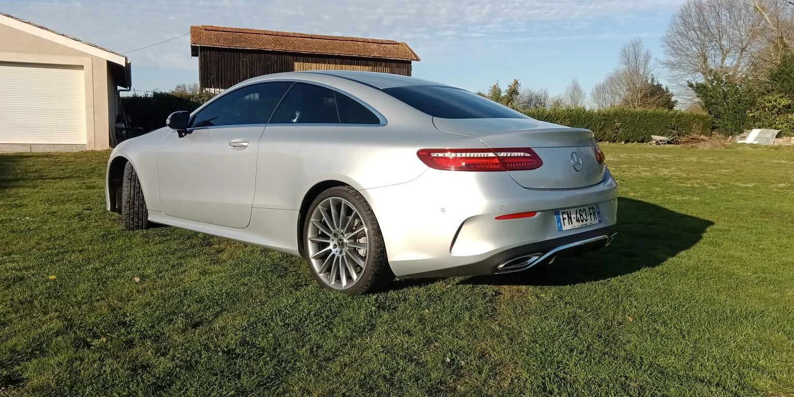
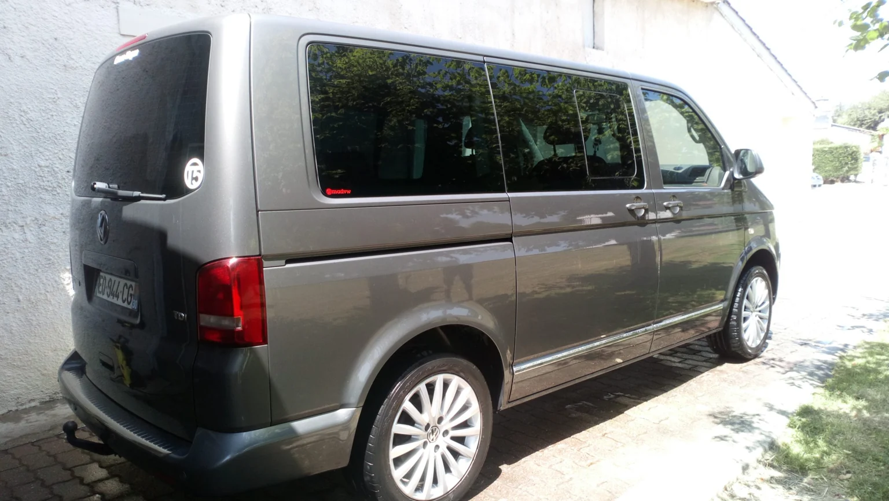
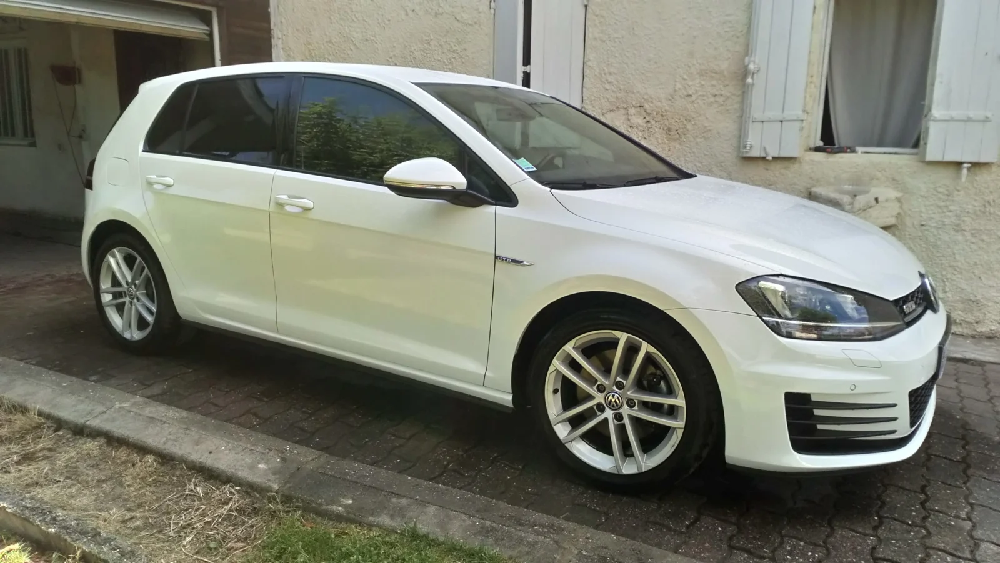
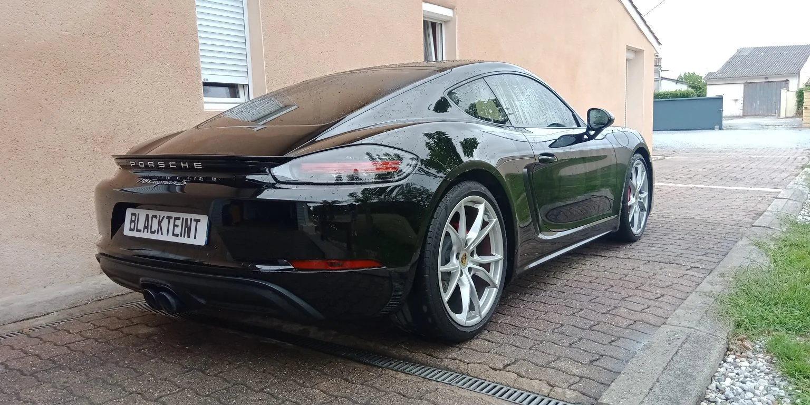
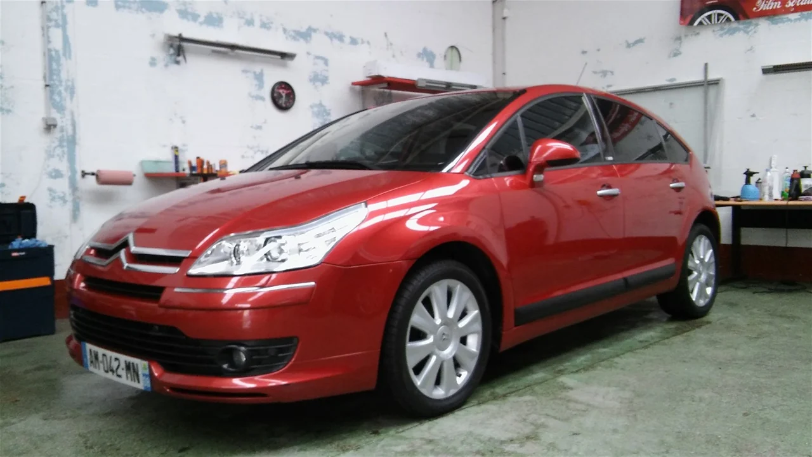

L’arrière
3/4 arrière
Les vitres latérales arrière et la lunette. Une formule proposée pour les citadines, berlines, SUV et monospaces.
Vitres teintées
Citadine, berline, SUV, utilitaire ou van : la pose se définit selon les surfaces vitrées, le modèle du véhicule et le rendu recherché.
Parler de mon véhicule
Les formules
Le choix du film, le vitrage à traiter et le tarif se précisent directement avec l’atelier.
L’arrière
Les vitres latérales arrière et la lunette. Une formule proposée pour les citadines, berlines, SUV et monospaces.
L’ensemble
Une formule avant et arrière, avec un choix de film et de vitrages à définir avec Blackteint33.
L’avant
La pose sur les deux vitres avant, avec ou sans custodes. Contactez l’atelier pour votre véhicule.
Les autres projets
Utilitaires, vans, camping-cars et vitrages de bâtiment : échangez avec l’atelier sur votre besoin.
Quels véhicules ?
Le site actuel de Blackteint33 distingue plusieurs gabarits. Les anciens tarifs promotionnels ne sont pas repris ici : le prix se confirme avec l’atelier.
Clio, Fiat 500, Polo, Mini, Corsa et modèles de gabarit comparable.
308, C4, Mégane, Audi A3, Série 3/5, Talisman et autres berlines ou breaks.
Captur, 2008, Tiguan, Sportage, X5/X6, Q7, GLE, Touareg, Espace, 5008 et équivalents.
Étude sur devis selon le nombre de vitrages, leurs dimensions et leur accessibilité.

Au-delà de la berline
Votre projet concerne un van, un camping-car ou un bâtiment ? Ces prestations sont également proposées sur devis.
Archives de l’atelier



Vitres avant · réglementation française
Pour le pare-brise et les vitres latérales avant, la réglementation raisonne sur la transmission lumineuse finale de la vitre. Elle doit rester d’au moins 70 %, hors dérogations prévues par les textes.
Article R316-3 du Code de la route, nouvel ongletde transmission régulière de la lumière pour le pare-brise et les vitres latérales avant.
Le Code prévoit une contravention de 4e classe, un retrait de trois points et une immobilisation possible.
Avant de se rencontrer
La transparence finale du pare-brise et des vitres latérales avant doit rester d’au moins 70 %. Le bon choix dépend donc aussi du vitrage d’origine ; Blackteint33 peut vous renseigner sur la configuration à envisager.
Le modèle du véhicule, le vitrage à traiter et la prestation souhaitée. Un appel à l’atelier permet de préciser votre demande.
Contactez Blackteint33 pour connaître le tarif correspondant à votre véhicule et à la formule choisie.
Appelez le 06 68 64 68 86 pour échanger sur la prestation et convenir d’un créneau.